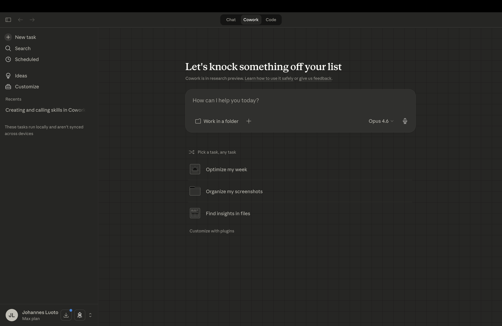
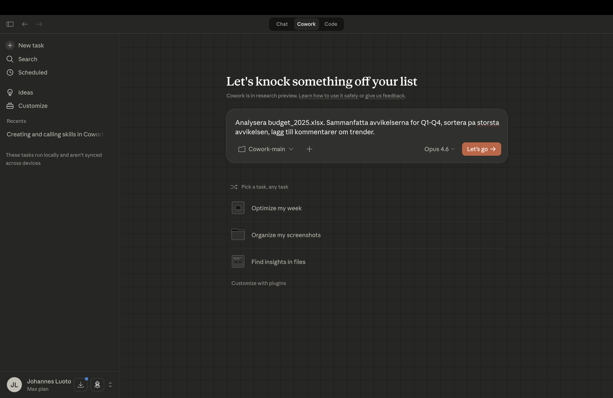
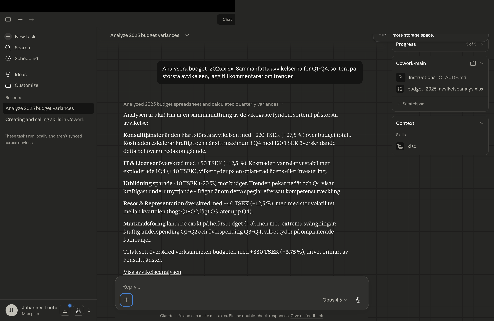

Cowork — Din första AI-kollega
Du ska nu göra det du just såg i Modul 0 — själv. På 20 minuter är du igång.
Installera Claude Desktop
Fyra steg från noll till en fungerande AI-kollega på din dator.
Gå till claude.ai/download och ladda ner Claude Desktop
Gå till claude.ai/download och välj rätt version för ditt operativsystem (macOS eller Windows). Kör installationen som vanligt.
Installera och logga in
Öppna den nedladdade filen och följ installationsguiden. Logga sedan in med ditt konto.

Verifiera att Cowork fungerar
Kopiera prompten nedan och klistra in den i Claude Desktop. Om en fil dyker upp på skrivbordet fungerar allt.
Skapa en fil på mitt skrivbord som heter test.txt med texten "Hej från Claude"Förväntad respons:
En fil dyker upp på skrivbordet. Claude kan läsa och skriva filer direkt på din dator.
Ladda ner övningsfiler
Dessa filer används i övningarna genom hela kursen. Packa upp ZIP-filen i en mapp du hittar enkelt.
Innehåll:
Din första analys
Du har en Excelfil med kvartalsdata. Nu ska Claude analysera den åt dig.
Ge Claude instruktionen
Kopiera prompten nedan och klistra in den i Claude Desktop. Byt ut [övningsmappen] mot din mapp.
Öppna filen kvartalsdata.xlsx i mappen [övningsmappen].
Sammanfatta avvikelserna för alla fyra kvartalen i en tabell.
Kolumner: Konto | Budget | Utfall | Avvikelse | Kommentar
Sortera på största avvikelsen först.
Förväntad output
Claude läser filen, gör beräkningarna och presenterar resultatet. Så här kan det se ut:

Iterera
Du behöver inte nöja dig med första svaret. Be Claude förbättra resultatet:
Lägg till en kolumn med procentuell avvikelse och markera de tre största avvikelserna.Claude bygger vidare på föregående resultat — du behöver inte börja om från början.
Fyra saker att komma ihåg
Dessa principer gör skillnaden mellan "det där AI-verktyget" och en riktig arbetspartner.
Instruktionens kvalitet avgör resultatet
En vag instruktion ger ett vagt svar. En specifik instruktion ger ett användbart resultat.
Sammanfatta Excel-filen
Sammanfatta avvikelserna för Q1–Q4, sortera på största avvikelsen, lägg till kommentarer
Iterera
Tänk på det som en konversation, inte en Google-sökning. Varje steg bygger på föregående.
Varje steg tar några sekunder. På tre iterationer har du ett resultat som annars tagit en timme.
Granska alltid
AI gör misstag. Ibland subtila sådana som ser helt rimliga ut. Granska alltid siffrorna mot källan.

Viktigt
AI gör misstag. Granska alltid siffrorna mot originalkällan innan du använder dem.
Arbeta säkert
Cowork kan läsa, skriva och radera filer på din dator. Det är kraftfullt — men kräver medvetenhet. Du ansvarar för allt Claude gör å dina vägnar.
| Princip | Praktiskt |
|---|---|
| Begränsa filåtkomst | Peka Cowork mot en dedikerad arbetsmapp — inte hela hårddisken. Undvik mappar med lösenord, ekonomidokument eller personuppgifter. |
| Övervaka beteendet | Reagerar Claude på filer du inte nämnt? Utvidgar den uppdraget utanför det du bad om? Stanna och granska. |
| Var försiktig med webben | Webbinnehåll kan innehålla dolda instruktioner (prompt injection). Begränsa Coworks webbåtkomst till betrodda sidor. |
| Schemalagda uppgifter | Automatiska uppgifter körs utan din aktiva övervakning. Börja med lågrisk — sammanfattningar, inte utskick. Granska resultaten regelbundet. |
Ditt ansvar
Allt Claude publicerar, skickar eller ändrar sker å dina vägnar. Du ansvarar för resultatet — precis som med en assistent av kött och blod. Läs Anthropics fullständiga säkerhetsguide →
Modul 1 avklarad
Har du fått en tabell med avvikelser från alla fyra kvartalen? Fungerar kopiera-klistra in av prompten?
Då är du redo för nästa modul — där vi lär oss context engineering och hur du styr resultatet med rätt kontext.